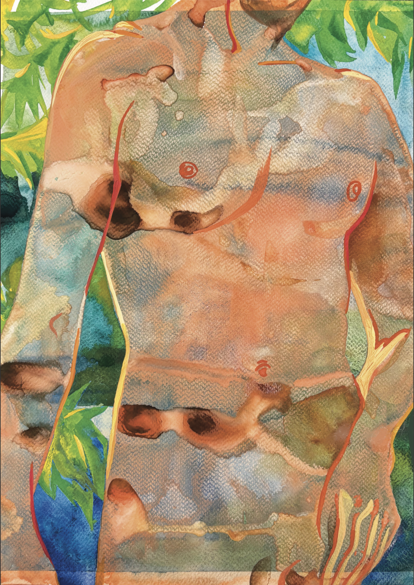

Ekaterina Ilina. Untitled. Tbilisi, Georgia
The watercolor pigment spreads across the paper the way water moves through a garden path, unpredictable and entirely indifferent to boundaries. Working on this body, I found myself thinking about the porousness of human skin—how we are never truly separate from the landscapes we inhabit or the elements that touch us. The figure here yields to the blue and green washes like a riverbed adjusting to a sudden spring current, dissolving into shadow and leaf. Just as the memory of a place changes every time we recall it, losing its rigid contours until only a feeling remains, our bodies continually reshape themselves to accommodate time, grief, and the weight of changing circumstances. We are far less solid than we like to think, constantly being remade by what surrounds us.
- - -